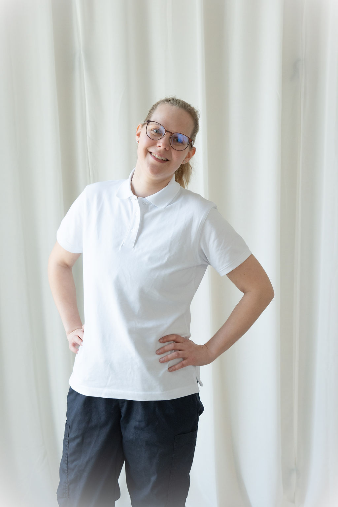

Minusta

Pinja Pasanen
Olen valmistunut 12/2025 jalkaterapeutiksi Kaakkois-Suomen ammattikorkeakoulusta (XAMK) Savonlinnasta. Taustaltani olen lähihoitaja ja vuosien työskentely hoitoalalla sytytti intohimoni jalkojen hyvinvointiin sekä terveyden edistämiseen.
Tämä innostus johdatti minut hakeutumaan jalkaterapian korkeakouluopintoihin, josta valmistuin 3,5-vuotisen tutkinnon suorittaneena terveydenhuollon ammattilaisena. Erikoisosaamiseni keskittyy alaraajojen terveyteen, toimintakykyyn ja hyvinvointiin.
Missio
Jalkaterapeuttina tarjoan kokonaisvaltaista hoitoa, joka erottuu tavallisesta jalkojen hoidosta koulutukseni syvyyden ja monipuolisuuden ansiosta. Osaamiseni kattaa iho- ja kynsiongelmien hoidon sekä yksilölliset apuvälineet, kuten silikoniortoosit ja tukipohjalliset.
Tavoitteenani on edistää ja ylläpitää jalkojesi terveyttä ennaltaehkäisevästi sekä ratkaista mahdolliset ongelmat tehokkaasti. Jokainen asiakas on ainutlaatuinen, joten räätälöin hoidot juuri sinun tarpeidesi mukaisiksi.
Koulutus
Jalkaterapeutti (AMK)
Kaakkois-Suomen ammattikorkeakoulu - 2025
Hieroja
Samiedu - 2026
Lähihoitaja
Savon ammatti- ja aikuisopisto - 2020
Sertifikaatit
Fast&Furious sugaring (level 1)
MAKEA pro - 2025